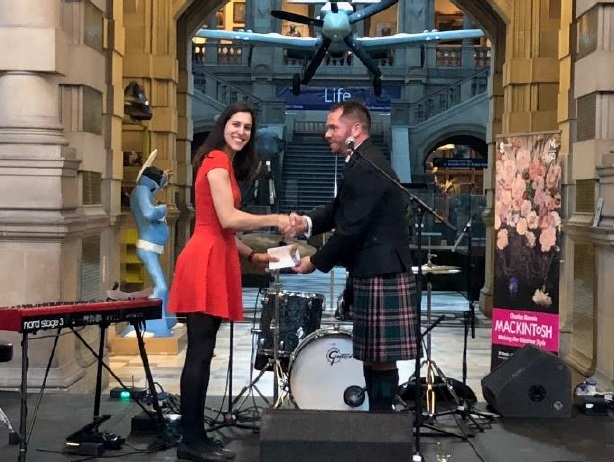
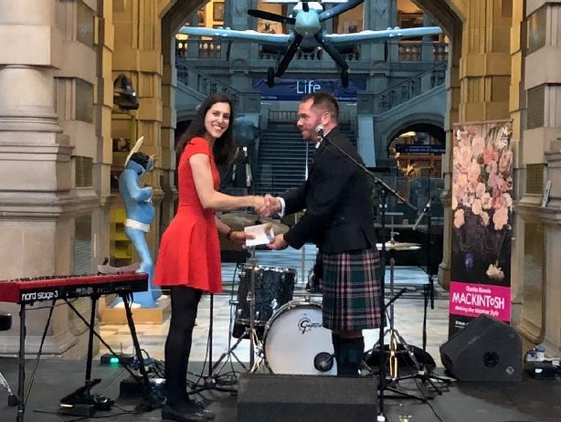

News and Events
SciX 2021
26th to 1st of October 2021, Providence, RI, USA
This last week I attended SciX2021 . After some challenges to travel mid-pandemic, I had a great time returning to an in-person conference. I was an invited speaker, and could present my latest research on high-throughput Raman flow cytometry and sorting. I got awarded an Early Career SAS travel grant (apply here) and attended my first Coblenz Society breakfast meeting. I also attended the SAS Early career event, a great opportunity for networking with other Early career researchers.

JSPS Science Dialogue
Chiba High School - 21st September 2021 (Online)
Today I gave a lecture to 15/16 years old students of the Chiba High School, as part of the Science Dialogue JSPS initiative. The lecture had to be moved to online due to COVID19. This was, however, a great oportuniy to do an online tour of our facilities in Goda-lab. I showed the students real life fluorescence with experiments in fluorescent dyes and also on the energy drink Oramin C, fluorescent due to its high concentration of vitamin B2! It was a fantastic experience, and I think the students had a good time!

Quantum Life 2021
16 September 2021, Japan (Online)
Today I gave a talk at the Quantum Life Science 2021 conference, based in Japan. The conference was held online and both in English and Japanese, and used the Remo platform for the poster session which I found really enjoyable! I presented my research on FT-CARS vibrational flow cytometry for the detection of metabolic analytes in microalgae. It was an honor to win a silver presentation award for this presentation.

Serendipity Symposium 2020
15-16 December 2020, Shimuzu, Shizuoka, Japan
Despite the COVID-19 pandemic, The Serendipity Symposium 2020 was held in Marinart, Shimizu, Shizuoka, Japan on December 15-16, 2020. It was attended by a total of 73 people (mostly in person with partial Zoom-based participation) from all over the world. I took the opportunity to share my research on Raman flow cytometry for the detection of starch accumulated in microalgae, winning a silver best poster prize.

MicroTAS 2020
4-9 October 2020 (Online)
Eventhough we couldn’t meet in person for uTAS2020 do to the COVID19 pandemic, I could still attend online and present my research as a poster and a 1 minute flash presentation. It was a great opportunity for zoom based networking.

Serendipity Symposium 2019
9-11 November 2019, Hongo Campus, Tokyo, Japan
Right after landing in Tokyo, I had the pleasure to attend the Serendipity Symposium 2019. Here, I could present my PhD findings while meeting some of my new coworkers from Goda-lab, as well as attending presentations from Serendipity members from all around the world. I won a poster prize for my presentation on Raman detection of photosensitizers accumulated in cells.

MicroTAS 2018
11-15 November 2018, Kaohsiung, Taiwan
This conference was a fantastic opportunity to learn more about the latest innovation in microfluidics research and to network with top leaders of microfluidics in the world. Here, I presented my poster on Raman spectroscopy on single-cells on a chip using PDMS cell traps.
 

SPEC2018
10–15 June 2018, Glasgow, UK
It was an absolute pleasure to attend SPEC2018 on the 10th -15th of June 2018 as an invited speaker in Glasgow, Scotland. SPEC 2018 brought together clinicians and scientists, both industrial and academic, who are developing novel clinical spectroscopic instrumentation and techniques to improve world health and patient outcomes. Here, I talked about my work on Raman spectroscopy classification of live cells from different colorectal cancer stages. I also won a bronze poster prize.

STEM For Britain
January 2018, Ponticullis House, London, UK
I was selected for STEM for Britain on January 2018 in the Physics topic, an initiative that allowed me to present my research at the Ponticullis House to members of the parliament. I also granted an interview to BBC Radio Leeds about this occasion.

1st Microfluidic For Analytical Chemistry Conference
January 2018, Southamptom, UK
I presented my research on Raman for single cell analysis at the 1st Microfluidic for Analytical Chemistry Conference at the National Oceanography Centre in Southamptom in January 2018. This one day meeting aimed to bring together UK researchers developing and applying microfluidic systems for chemical and biochemical analysis. My poster presentation won “the Analyst” poster prize.